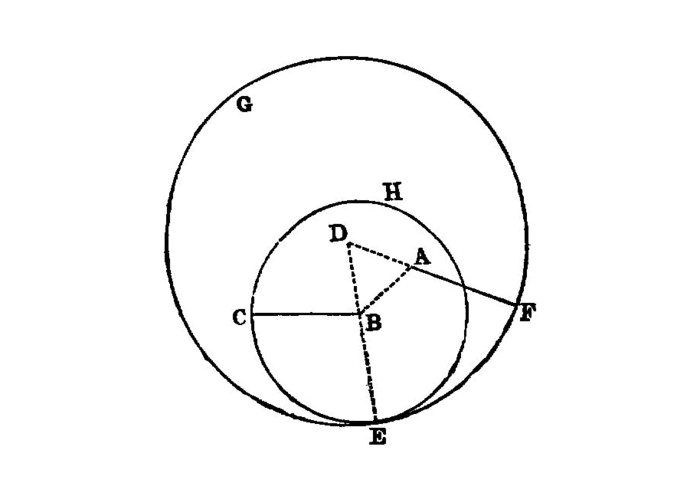

construct equal segments by extension¶
I.2
To place at a given point (as an extremity) a straight line equal to a given straight line.
—Euclid
{kind=link}
From the given points \(A\) and \(B\) set segment \(\bar{AB}\).
From the given points \(C\) and \(D\) set segment \(\bar{CD}\) shorter than \(\bar{AB}\).
PROBLEM: Extend segment \(\bar{CD}\) to a length equal to \(\bar{AB}\)
construct circle \((A, B)\) as \(c_1\)
With points \(A\) and \(C\) construct segment \(\bar{AC}\)
contruct equilateral triangle on \(\bar{AC}\)
identify new point of equaliteral triangle as \(E\)
construct line \(\overline{EA}\)
construct line \(\overline{EC}\)
Identify new point on \(c_1\) intersecting with \(\overline{EA}\) as \(F\)
construct circle \((E, F)`\) as \(c_2\)
Identify new point on \(c_2\) intersecting with \(\overline{EC}\) as \(G\)
Let the straight lines AE, BF be produced [2] in a straight line with DA, DB; [I.post.2] with centre B and distance BC let the circle CGH be described; [I.post.3] and again, with centre D and distance DG let the circle GKL be described. [I.post.3]
Then, since the point B is the centre of the circle CGH,
\(\therefore\) BC is equal to BG.
Again, since the point D is the centre of the circle GKL,
\(\therefore\) DL is equal to DG.
And in these DA is equal to DB;
- \(\therefore\) the remainder AL is equal to the remainder BG [3].
[I.c.n.3]
But BC was also proved equal to BG;
\(\therefore\) each of the straight lines AL, BC is equal to BG.
And things which are equal to the same thing are also equal to one another; [I.c.n.1]
\(\therefore\) AL is also equal to BC.
\(\therefore\) at the given point A the straight line AL is placed equal to the given straight line BC.
(Being) what it was required to do.
dependencies¶
[I.def.15]: /elem.1.def.15 “Book I - Definition 15” [I.1]: /elem.1.1 “Book I - Proposition 1” [I.post.1]: /elem.1.post.1 “Book I - Postulate 1” [I.post.2]: /elem.1.post.2 “Book I - Postulate 2” [I.post.3]: /elem.1.post.3 “Book I - Postulate 3” [I.c.n.1]: /elem.1.c.n.1 “Book I - Common Notion 1” [I.c.n.3]: /elem.1.c.n.3 “Book I - Common Notion 3”